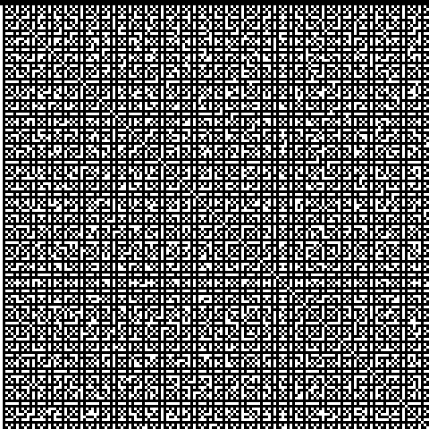
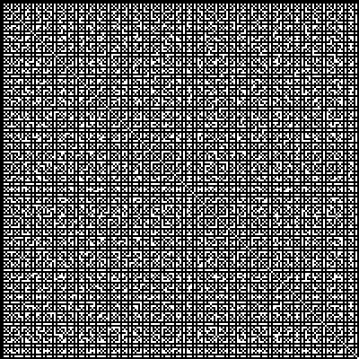

Harmonics
Programs written in 1992 in BASIC on a second-hand IBM PCjr, about whole-number ratios: how often each musical interval turns up among pairs of numbers, and which pairs share a factor. They were then translated into Fortran and C. Several do not run as written, so each result below is what the program set out to compute, worked out again by harmonics.py with exact arithmetic. The listings are kept exactly as printed: the scans, and a transcription of each.
They are the starting point of Coprime pairs and musical intervals.
Harmonic1
For every pair 2 ≤ D ≤ C, works out (2C+D−3)/(C+D−2), which always lies between 3/2 and 2, and counts how often it lands exactly on each of 11 intervals. Prints the totals each time C reaches 2, 3, 5, 9, … 32769. The totals turn out to be ⌊(C−1)/(p−q)⌋, so intervals with the same p−q always tie: 7/4 with 8/5, 9/5 with 11/7, and 11/6, 12/7, 13/8 and 14/9 together.
BASIC: scan, text · Fortran: scan, text · C from f2c: scan, text · C by hand: scan, text
Harmonic1: how many pairs 2 <= D <= C give (2C+D-3)/(C+D-2) = p/q,
totals printed each time C reaches 2, 3, 5, 9, ... 32769.
Counted pair by pair up to C = 1025; above that from the formula
floor((C-1)/(p-q)), which the counting confirms exactly.
ratio 3/2 5/3 7/4 8/5 9/5 11/7 11/6 12/7 13/8 14/9 13/7
cents 702 884 969 814 1018 782 1049 933 841 765 1072
C
2 1 0 0 0 0 0 0 0 0 0 0
3 2 1 0 0 0 0 0 0 0 0 0
5 4 2 1 1 1 1 0 0 0 0 0
9 8 4 2 2 2 2 1 1 1 1 1
17 16 8 5 5 4 4 3 3 3 3 2
33 32 16 10 10 8 8 6 6 6 6 5
65 64 32 21 21 16 16 12 12 12 12 10
129 128 64 42 42 32 32 25 25 25 25 21
257 256 128 85 85 64 64 51 51 51 51 42
513 512 256 170 170 128 128 102 102 102 102 85
1025 1024 512 341 341 256 256 204 204 204 204 170
2049 2048 1024 682 682 512 512 409 409 409 409 341
4097 4096 2048 1365 1365 1024 1024 819 819 819 819 682
8193 8192 4096 2730 2730 2048 2048 1638 1638 1638 1638 1365
16385 16384 8192 5461 5461 4096 4096 3276 3276 3276 3276 2730
32769 32768 16384 10922 10922 8192 8192 6553 6553 6553 6553 5461
Harmonic2
Reads a start, an end and a number of steps, walks along sin(x), and lists where the curve turns over. Shown for 0 to 20 in 200 steps.
BASIC: scan, text · Fortran: scan, text · C from f2c: scan, text
Harmonic2: turning points of sin(x) from 0 to 20 in 200 steps
(step 0.1). Each is the sample where the curve turns over, with the
true turning point (k + 1/2)pi beside it.
x sin(x) kind true x
1.6000 0.99957 peak 1.5708
4.7000 -0.99992 trough 4.7124
7.9000 0.99894 peak 7.8540
11.0000 -0.99999 trough 10.9956
14.1000 0.99931 peak 14.1372
17.3000 -0.99977 trough 17.2788
Harmonic3
Harmonic1’s count, started again from zero each time the limit doubles. The listing never stops; the result stops at 1025.
BASIC: scan, text · Fortran: scan, text · C from f2c: scan, text · C by hand: scan, text
Harmonic3: B, then the interval counts for every pair 2 <= D <= C <= B,
recounted from scratch each pass. The listing never stops; this
stops at B = 1025.
ratio 3/2 5/3 7/4 8/5 9/5 11/7 11/6 12/7 13/8 14/9 13/7
cents 702 884 969 814 1018 782 1049 933 841 765 1072
B
2 1 0 0 0 0 0 0 0 0 0 0
3 2 1 0 0 0 0 0 0 0 0 0
5 4 2 1 1 1 1 0 0 0 0 0
9 8 4 2 2 2 2 1 1 1 1 1
17 16 8 5 5 4 4 3 3 3 3 2
33 32 16 10 10 8 8 6 6 6 6 5
65 64 32 21 21 16 16 12 12 12 12 10
129 128 64 42 42 32 32 25 25 25 25 21
257 256 128 85 85 64 64 51 51 51 51 42
513 512 256 170 170 128 128 102 102 102 102 85
1025 1024 512 341 341 256 256 204 204 204 204 170
Harmonic4
Lists every distinct ratio (2X+Y)/(X+Y) of at least 3/2 for X and Y up to 20, then counts how often each occurs for X and Y up to 10.
Harmonic4: every distinct ratio (2X+Y)/(X+Y) of at least 3/2 for X, Y
from 1 to 20, smallest first, with how often it occurs for X, Y from
1 to 10. 128 ratios; 32 occur in the smaller grid.
ratio cents count
3/2 702.0 10
59/39 716.7 0
56/37 717.5 0
53/35 718.4 0
50/33 719.4 0
47/31 720.5 0
44/29 721.7 0
41/27 723.2 0
38/25 724.9 0
35/23 726.9 0
32/21 729.2 0
29/19 732.1 1
55/36 733.7 0
26/17 735.6 1
49/32 737.7 0
23/15 740.0 1
43/28 742.7 0
20/13 745.8 1
57/37 748.1 0
37/24 749.4 0
54/35 750.7 0
17/11 753.6 1
48/31 756.9 0
31/20 758.7 0
45/29 760.6 0
14/9 764.9 2
53/34 768.5 0
39/25 769.9 0
25/16 772.6 1
36/23 775.6 0
47/30 777.2 0
11/7 782.5 2
52/33 787.3 0
41/26 788.5 0
30/19 790.8 0
49/31 792.6 0
19/12 795.6 1
46/29 798.7 0
27/17 800.9 1
35/22 803.8 0
43/27 805.7 0
51/32 806.9 0
8/5 813.7 3
53/33 820.2 0
45/28 821.4 0
37/23 823.1 0
29/18 825.7 0
50/31 827.6 0
21/13 830.3 1
34/21 834.2 0
47/29 835.9 0
13/8 840.5 2
44/27 845.5 0
31/19 847.5 0
49/30 849.4 0
18/11 852.6 1
41/25 856.4 0
23/14 859.4 1
51/31 861.9 0
28/17 863.9 0
33/20 867.0 0
38/23 869.2 0
43/26 871.0 0
48/29 872.4 0
5/3 884.4 5
47/28 896.7 0
42/25 898.2 0
37/22 900.0 0
32/19 902.5 0
27/16 905.9 0
49/29 908.1 0
22/13 910.8 1
39/23 914.2 0
17/10 918.6 1
46/27 922.4 0
29/17 924.6 0
41/24 927.1 0
12/7 933.1 2
43/25 938.9 0
31/18 941.1 0
19/11 946.2 1
45/26 949.7 0
26/15 952.3 0
33/19 955.8 0
40/23 958.0 0
47/27 959.6 0
7/4 968.8 3
44/25 978.7 0
37/21 980.6 0
30/17 983.3 0
23/13 987.7 1
39/22 991.2 0
16/9 996.1 1
41/23 1000.8 0
25/14 1003.8 0
34/19 1007.4 0
43/24 1009.6 0
9/5 1017.6 2
38/21 1026.7 0
29/16 1029.6 0
20/11 1035.0 1
31/17 1040.1 0
42/23 1042.5 0
11/6 1049.4 2
35/19 1057.6 0
24/13 1061.4 0
37/20 1065.0 0
13/7 1071.7 1
41/22 1077.7 0
28/15 1080.6 0
43/23 1083.2 0
15/8 1088.3 1
32/17 1095.0 0
17/9 1101.0 1
36/19 1106.4 0
19/10 1111.2 1
40/21 1115.5 0
21/11 1119.5 1
23/12 1126.3 0
25/13 1132.1 0
27/14 1137.0 0
29/15 1141.3 0
31/16 1145.0 0
33/17 1148.3 0
35/18 1151.2 0
37/19 1153.8 0
39/20 1156.2 0
41/21 1158.3 0
Harmonic5
Gives each screen row to a number, splits it into primes, and puts a dot at every multiple of each prime along the row. A dot means the column and row share a factor, so the dark gaps are the coprime pairs.
BASIC: scan, text · Fortran: scan, text

Pattern
Prints every point (X, Y) up to 199 where X and Y are both multiples of some A from 2 to 199: every pair with a common factor, 24,471 lines in all.
BASIC: scan, text · Fortran: scan, text · C from f2c: scan, text · C by hand: scan, text
